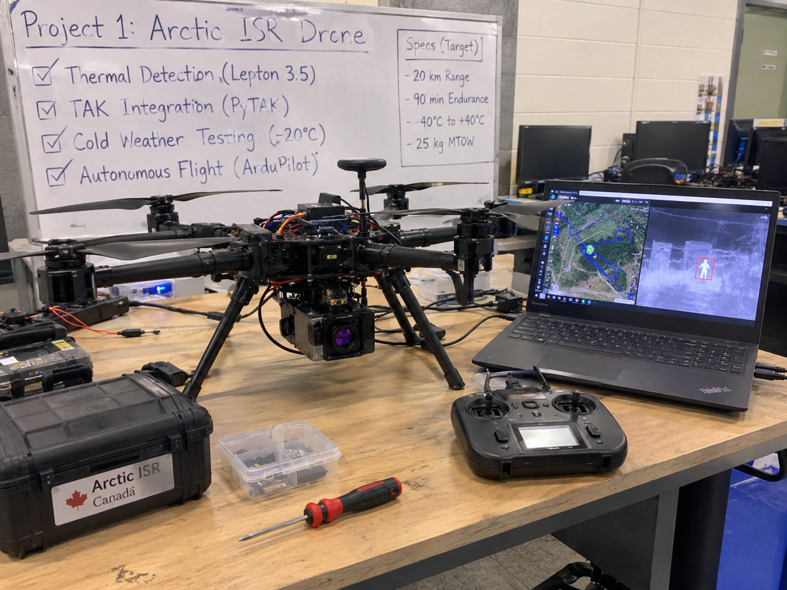
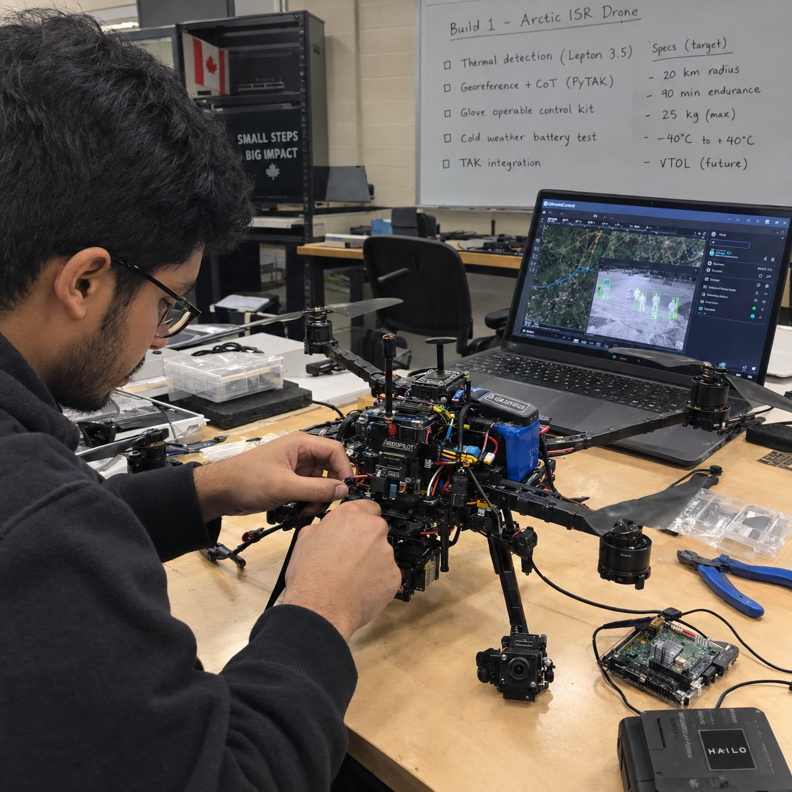
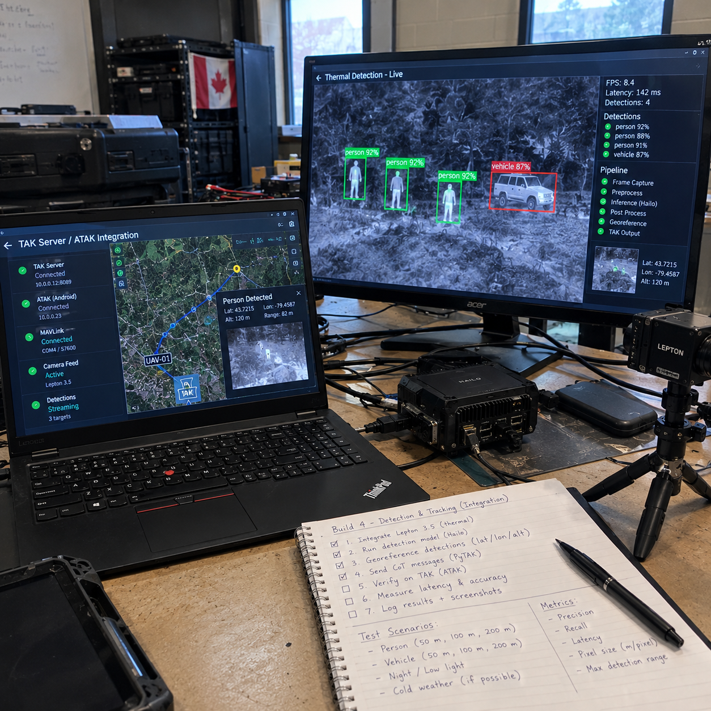
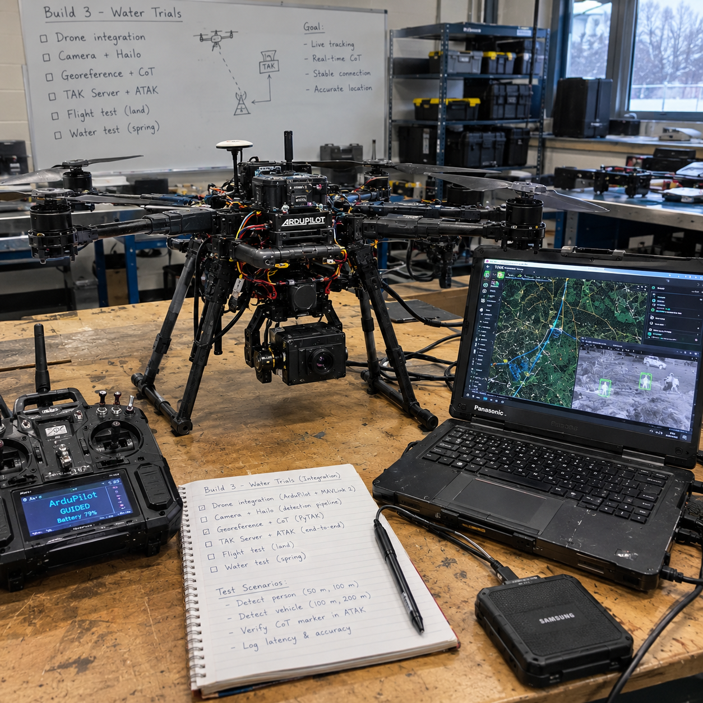

Arctic ISR Drone (Cold, Glove-Operable, Thermal, TAK)
A hobby-scale build against the MINERVA Arctic UAS spec: heated battery bay with cold data, thermal person detection measured in pixels-on-target, detections georeferenced into TAK, and a glove-operable control kit.
Overview
This is a published build guide for a hobby-scale Arctic ISR drone planned against the Government of Canada MINERVA Arctic UAS specification: a quadcopter that finds people and vehicles with a thermal camera, runs detection on board, pushes georeferenced markers into TAK, and stays operable with winter gloves. Nothing on this page is built or tested yet.
Canada publishes its defence needs as measurable specs, and the MINERVA Arctic UAS challenge is one of the clearest: a small uncrewed aircraft that operates from -40 to +40 C, holds station in 55 km/h wind, covers a 20 km radius for 90 minutes, and can be worked by an operator wearing winter gloves. Proposals for that challenge closed on September 24, 2026, and a solo hobby builder was never going to bid. The spec still makes an excellent engineering target, so this guide treats it as a spec sheet and builds the parts a bench-scale project can honestly demonstrate.
Scope honesty is the design rule. A bench build cannot meet a 25 kg takeoff weight with a 20 km radius and 90 minute endurance, and this page never claims otherwise. What it can do is prove the hard subsystems in miniature: a heated and instrumented battery bay with real cold-soak data, thermal person and vehicle detection with a measured pixel-size limit, detections georeferenced into TAK markers, and a glove-operable control kit with timed tasks. Every subsystem ends in a spec-gap table that states plainly what was met, what was partial, and what was never tested.
The build is defensive only: detect, survey, and report. Nothing here jams, spoofs, or carries anything beyond sensors. Test flights happen only on my own gear, with permission, inside Transport Canada rules. Numbers marked (est.) are calculated from cited specs, and items marked (verify) were not confirmed against a primary source.
Concept Illustrations
Concept illustrations made while scoping the build; they show the design intent, not finished hardware.




Target Spec
The table below restates the MINERVA Arctic UAS requirements as published, with the recognition requirement flagged because it is cited to a secondary source (verify). This page uses the closed challenge as a spec sheet, nothing more.
| Requirement | MINERVA Arctic UAS target |
|---|---|
| Operating temperature | -40 to +40 C |
| Wind | At least 55 km/h |
| Precipitation | Light rain, snow, moderate icing |
| Radius | At least 20 km |
| Endurance | At least 90 minutes |
| Takeoff weight | No more than 25 kg |
| Transport | Fits in a 240 L container |
| Controls | Operable with winter gloves |
| Desired extras | VTOL, autonomous waypoints, TAK compatibility, fibre-optic or other non-radio control mode, production cost about $60,000 or less |
| Recognition | People and vehicles, day and night (cited to a secondary source, verify) |
| Status | Proposals closed September 24, 2026; used here as a spec sheet only |
What the Hobby Build Proves
A bench-scale drone cannot meet the full spec, so the build is scoped to prove five narrower claims, each with measurements attached rather than impressions:
- A heated, instrumented battery bay with cold-test data. An insulated enclosure with a heater, thermistors and a power monitor, soaked in a freezer and then in real winter, logging voltage sag, heater energy and usable capacity at each temperature actually tested.
- Thermal person and vehicle detection with a measured pixel-size limit. Detection performance reported against pixels-on-target, so the limit of a 160x120 thermal sensor is stated in the unit that actually drives it.
- Detections georeferenced and shown in TAK. Every detection fused with telemetry into a latitude and longitude, sent as a Cursor on Target message, with the georeference error measured against surveyed ground marks.
- A glove-operable control kit with measured task times. Physical macro pad and a stripped-down tablet view, timed with real mitts against bare hands.
- A cost model and an honest gap table. A bill of materials with a scaling argument toward the spec's $60,000 production target, and a table that says exactly which requirements were never touched.
Architecture
Figure 1: thermal frames are captured over USB, inference runs on the Hailo accelerator, detections fuse with signed MAVLink telemetry into coordinates, and Cursor on Target messages carry the markers to TAK, while the operator flies by RC link and works the payload with a physical macro pad.
The sensing chain starts at a FLIR Lepton 3.5 thermal camera on a PureThermal board, streaming frames over USB into a Raspberry Pi 5. A Hailo AI HAT+ accelerator runs the detector on board, so the drone detects and tracks at the edge instead of streaming raw video to the ground. Shutter-correction frames from the Lepton get dropped before inference so they never reach the detector as garbage input.
The flight controller runs ArduPilot and talks to the Pi over MAVLink 2 with packet signing on, so telemetry for georeferencing is authenticated and the command path resists replay. Each detection is fused with aircraft position, attitude and camera geometry into a ground coordinate, then sent as a Cursor on Target message via PyTAK to a TAK Server, where it appears in ATAK. On the operator side there are three controls: an ELRS RC link for flying, a physical six-button macro pad for payload actions, and a stripped-down tablet screen for the map and status, all chosen to work with winter mitts.
Georeferencing: the simplified near-nadir projection model
The georeference step turns a pixel in the thermal frame into a latitude and longitude an operator can walk to. The model is deliberately simple: with the camera held near-nadir (pointing almost straight down) and altitude known from the flight controller, a detection's pixel offset from frame centre becomes a look angle, and the look angle times altitude becomes a ground offset on a local tangent plane. Cueing a ground team does not need survey-grade photogrammetry, so a pinhole model with a small-angle correction for gimbal pitch is enough, and every marker carries its uncertainty with it.
Figure 2: the simplified near-nadir projection model this build will implement: pixel offset from frame centre becomes a look angle theta, altitude h turns it into a ground offset, and the local tangent plane plus the drone's own position turn the offset into lat/lon. Illustrative geometry, not measured data.
Two error sources dominate this model in practice, and the build plan measures both. First, time: at a 10 m/s survey speed, one second of lag between frame capture and the telemetry used to project it shifts the marker by 10 m, so frames get timestamped at capture and matched to telemetry by time, not arrival order. Second, attitude: a few degrees of gimbal pitch error at 120 m altitude moves the ground point by metres. That is why the metrics list scores georeference error against surveyed ground marks rather than trusting the model on paper.
How to Build
Six phases, ordered so simulation and bench work absorb the risk before anything flies. Week ranges overlap because cold-rig construction runs in parallel with the thermal pipeline.
Phase 0: Simulation (weeks 1-2)
- Run ArduPilot SITL as the virtual aircraft so the whole software chain can be developed and broken safely indoors.
- Write the georeference function, the math that turns a pixel in the thermal frame plus aircraft position, attitude and camera geometry into a ground coordinate, and test it against SITL telemetry with a fake detection stream.
- Stand up a TAK Server (OpenTAK or FreeTAKServer) and ATAK on an Android device.
- Confirm that Cursor on Target messages from the simulated pipeline appear as markers in ATAK. If markers do not show up here, nothing later matters.
Phase 1: Thermal pipeline on the bench (weeks 2-6)
- Capture Lepton frames through the PureThermal board over USB, dropping shutter-correction frames so the detector only sees real imagery.
- Train a detector on the HIT-UAV dataset (2,898 infrared images taken from 60-130 m) plus own labelled clips. Check licences before committing: Ultralytics YOLOv8 is AGPL-3.0, so YOLOX is a candidate if that licence is a problem.
- Compile the model for the Hailo accelerator and measure end-to-end latency from frame capture to TAK marker.
- Report detection performance against pixels-on-target, not metres. The pixel math (est.): the Lepton 3.5 is 160x120 with about a 57 degree horizontal field of view, so one pixel is roughly 6.2 mrad. At 50 m a pixel covers about 0.3 m, so a person is roughly 2x5 pixels; at 100 m, about 1x3 pixels. That tiny target is why range claims without pixel counts are meaningless.
Phase 2: Cold rig (weeks 4-8)
- Respect the chemistry first: LiPo internal resistance rises sharply in the cold, Li-ion loses roughly 15-20% of capacity near 0 C, and flight time can drop 20-50% below freezing. Raise the low-voltage landing threshold to about 3.5 V per cell in winter as a starting range; measuring the real numbers is the point of the rig.
- Build an insulated battery bay with a resistive or PTC heater, DS18B20 thermistors, an INA228 power monitor and a small MCU to run it, and log heater watt-hours per flight so the cost of staying warm is a measured number.
- Protect the sensor: the Lepton's operating range starts around -10 C with storage to -40 C (verify), so Arctic use needs a warm enclosure for the camera, not just the battery.
- Test in a freezer at about -18 C first, then in real winter. Report only the temperatures actually tested, never extrapolated ones.
- Manage moisture: warm cold gear slowly in a sealed bag so condensation forms on the bag, not the electronics, and keep desiccant in the thermal housing.
Phase 3: Flight (weeks 8-12)
- Assemble an X500-class quadcopter with ArduPilot: waypoint mission, return-to-launch, geofence, and a low-battery failsafe with the raised cold threshold from Phase 2.
- Fly planted targets at surveyed positions so georeference error is measured against known truth, not estimated.
Phase 4: Glove usability (weeks 10-12)
- Build the physical control kit: buttons for arm, hold, return, land and mark, with large targets, no pinch or zoom gestures, and one-hand operation.
- Pair the six-button macro pad with a stripped-down tablet view (MAVSDK or pymavlink) that stays readable in snow glare.
- Test with real mitts: time to launch, abort and mark, plus error counts against bare hands. The numbers, not the feel, decide whether the kit passes.
Phase 5: Spec-gap report
- Assemble every measurement into the gap table and the metrics list, with statuses that stay honest: Planned, Partial, Not tested, never rounded up.
- Publish the repo with the claim, the spec table and the results, so the gap table is the headline rather than a footnote.
Spec-Gap Table
This is the honest core of the build. Every status below reflects the plan as published; nothing has been built or flown yet, so tested statuses are targets to be proven, not results.
| Requirement | MINERVA target | Hobby status |
|---|---|---|
| Operating temperature | -40 to +40 C | Partial: freezer at about -18 C plus real winter; only tested temperatures reported |
| Wind | 55 km/h | Not met: an X500-class quad will not hold position in 55 km/h wind; real wind logged |
| Precipitation | Light rain, snow, moderate icing | Partial: no icing test planned |
| Radius | 20 km | Not tested: visual line of sight only |
| Endurance | 90 minutes | Partial: different airframe class |
| Takeoff weight | 25 kg | Not comparable: hobby airframe is far lighter |
| Transport | 240 L container | Measure and report |
| Glove operation | Operable with winter gloves | To be tested with timed tasks |
| TAK compatibility | TAK output | To be tested: Cursor on Target via PyTAK |
| VTOL | Desired extra | Yes, but not the spec airframe |
| Fibre-optic mode | Desired extra | Not tested |
| Production cost | About $60,000 or less | Argued only via BOM plus scaling argument |
| Recognition | People and vehicles, day and night | Partial: wording cited to a secondary source (verify) |
Metrics to Publish
- Detection recall and false alarms per pixels-on-target, split day and night.
- Georeference error against surveyed marks.
- Image-to-TAK latency, frame capture to marker on screen.
- Endurance and voltage sag versus temperature.
- Heater watt-hours per flight.
- Glove task times: launch, abort, mark, with error counts against bare hands.
- Bill of materials cost with the scaling argument toward the spec target.
Hardware to Buy First
| Item | Role in the build |
|---|---|
| Pixhawk-class flight controller with GPS (RTK later) | ArduPilot brain; RTK added when georeference truth needs tightening |
| X500-class frame, motors, ESCs | Airframe for Phases 3 and 4 |
| Raspberry Pi 5 (8 GB) | Companion computer for capture, georeferencing and PyTAK |
| AI HAT+ (Hailo) | On-board detection accelerator |
| FLIR Lepton 3.5 + PureThermal board | Thermal sensing over USB |
| Visible camera | Daytime comparison against thermal |
| 6S 21700 Li-ion pack or LiPo | Flight battery; the cold rig is built around it |
| Heater film, DS18B20 thermistors, INA228 power monitor | Heated, instrumented battery bay |
| ELRS RC link | Manual flight control |
| USB macro pad | Glove-operable payload controls |
| Balance charger + fire-safe bag | Battery discipline on the bench |
Safety and Legal
- Register drones of 250 g or more and hold the right pilot certificate: basic for uncontrolled airspace, advanced for controlled airspace or flight near people.
- Stay within visual line of sight and below 122 m.
- Transport Canada changed the rules on November 4, 2025: lower-risk BVLOS now needs a Level 1 Complex certificate (18 or older, uncontrolled airspace, away from airports), and SFOC applications carry a fee.
- Never charge lithium batteries below 0 C.
- An X500-class quad will not hold position in 55 km/h wind; log real wind on every flight and do not pretend otherwise.
- Defensive only: this build detects, surveys and reports. Nothing that jams, spoofs or carries munitions, and RF stays receive-only unless licensed.
- Test only your own gear, with permission, and use synthetic data for anything mimicking protected material.
Frequently Asked Questions
What is the MINERVA Arctic UAS challenge?
MINERVA is a Canadian government challenge program run through Innovative Solutions Canada. Its Arctic UAS challenge asks for a drone that operates from -40 to +40 C, flies a 20 km radius for 90 minutes, weighs no more than 25 kg, and works with winter gloves. Proposals closed September 24, 2026, so this page uses the requirement as a spec sheet only.
Can a hobby drone meet the Arctic ISR spec?
No. A solo bench build cannot meet the 25 kg takeoff weight, 20 km radius, or 90 minute endurance requirements. The hobby-scale version proves five narrower things: a heated battery bay with cold-test data, thermal detection with a measured pixel-size limit, detections georeferenced into TAK, a glove-operable control kit, and an honest gap table.
How does thermal person detection work on this drone?
A FLIR Lepton 3.5 thermal camera streams frames into a Raspberry Pi 5 with a Hailo AI HAT+ accelerator running the detector on board. Performance is reported against pixels-on-target, not metres: at 50 m a person covers roughly 2x5 pixels on the Lepton, and at 100 m about 1x3 pixels (est.).
How do drone detections get into TAK?
Each on-board detection is fused with flight-controller position, attitude and camera geometry into a latitude and longitude. The companion computer then sends that point as a Cursor on Target message with PyTAK to a TAK Server, where it appears as a marker in ATAK. The plan is to verify the full chain in simulation first.
How do you test a drone battery for Arctic cold?
The plan is an insulated, instrumented battery bay with a resistive or PTC heater, DS18B20 thermistors and an INA228 power monitor, tested first in a freezer at about -18 C, then in real winter. Only temperatures actually tested get reported. Never charge lithium batteries below 0 C.
Is it legal to fly this drone in Canada?
Drones of 250 g or more must be registered and the pilot needs the right certificate: basic for uncontrolled airspace, advanced for controlled airspace or near people. Flights stay within visual line of sight below 122 m. Since November 4, 2025, lower-risk BVLOS requires a Level 1 Complex certificate, and SFOC applications carry a fee.
Roadmap
The sequencing follows the southern Ontario calendar. From now to December the software and simulation builds go first, with this build's bench work on the thermal pipeline and cold-rig construction running alongside. December to March is cold-test season: freezer work now, real winter cold soaks as temperatures allow, with only tested temperatures ever reported. Flight phases slot in when weather, battery data and the simulation results all say go.
On the program side, MINERVA challenges run through Innovative Solutions Canada for incorporated Canadian companies, and the IDEaS counter-drone sandbox is open to individuals and rewards teams that push a system to failure so its limits are understood. The next sandbox is expected around 2028. This build is structured so its gap table, metrics and failure envelope would drop straight into that kind of evaluation, and the business-readiness checklist (incorporation, Controlled Goods Program status, CPCSC Level 1 self-assessment, liability insurance, supply-chain table) is tracked on the program page.
Cite This Page
Citation formats
Plain text
Taki Sadik, "Arctic ISR Drone Build Guide", TYFSADIK, https://tyfsadik.org/work/defence/arctic-isr-drone.html (accessed 2026-10-24).BibTeX
@misc{sadik-arctic-isr-drone,
author = {Sadik, MD. Taki Yasir Faraji},
title = {Arctic ISR Drone Build Guide},
year = {2026},
url = {https://tyfsadik.org/work/defence/arctic-isr-drone.html},
urldate = {2026-10-24}
}APA
Sadik, M. T. Y. F. (2026). Arctic ISR Drone Build Guide. TYFSADIK. https://tyfsadik.org/work/defence/arctic-isr-drone.html